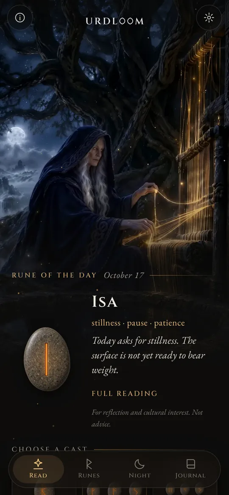
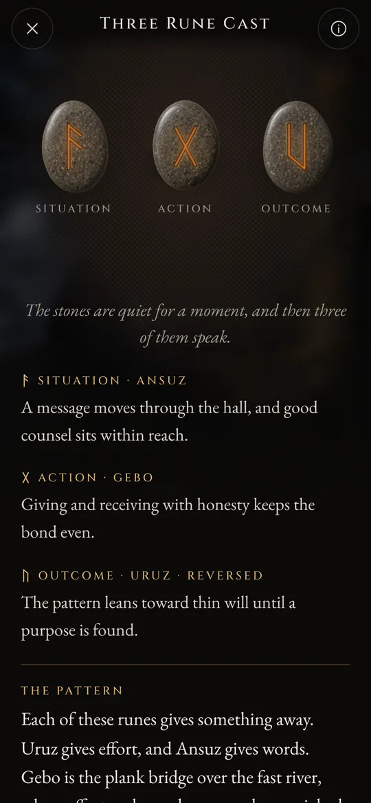
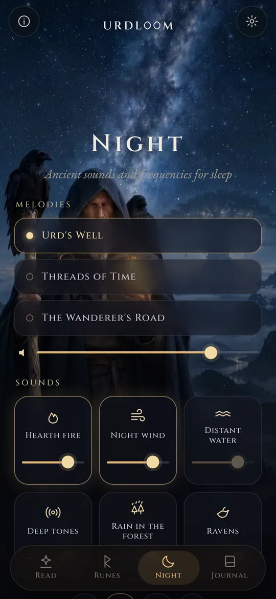
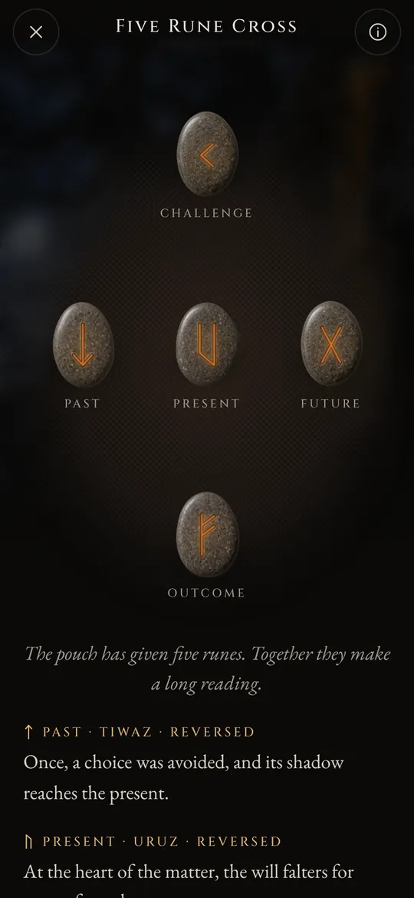

Rune readings from the well of fate.
Cast the Elder Futhark, read what falls in the voice of the old poems, and let the night sounds carry you into sleep.
Three women sit at a well
In the old Norse poems, three Norns sit at a well beneath Yggdrasil, the world tree. They water its roots, carve staves and lay down the lives of all who are born. The eldest is Urd. Her name means what has come to pass, and the well is named after her.
Urdloom takes its name from her, and from the loom on which fate was said to be woven. The app keeps that mood: a pouch of stones in your hand, a cloth on the floor, and readings written in the voice of the sagas rather than the voice of a horoscope.

From there come maidens, much knowing, three from the lake beneath the tree.Völuspá, stanza 20
Hold, shake, let go
Hold the pouch and the stones rattle in your hand. Let go and they fly onto the cloth, roll, settle and turn over one by one. The reading appears beneath them.

One rune
A single stone for the day ahead, or for a question that can be answered yes or no. Tap and it is thrown.


Three runes
Situation, action, outcome. Read from left to right like a short saga, then as one: a closing thread shows how the three speak to each other.

The five-rune cross
Past, present and future across the middle, the challenge above and the outcome below, with you at the heart of it.




Every reading was written by hand: the twenty-four runes, every pair and all 2,024 combinations of three, in each of the twenty-two languages. Nothing is generated while you wait.

The twenty-four runes
The Elder Futhark is the oldest runic alphabet, carved from about the second to the eighth century. Its twenty-four signs fall into three families of eight, called ætts, each named after the god whose rune stands at its head. Touch a stone to read it.
Freyr's ætt
Hagal's ætt
Tyr's ætt
The rune names are kept in their old form in every language. They are the names of the signs themselves, reconstructed by scholars from the rune poems and the oldest alphabets.
A short history of the runes
Runes are letters before they are anything else. They were cut into wood, bone, metal and stone by Germanic peoples for some fifteen hundred years. This is how the signs and the old practice of casting lots came down to us.

Lots on a white cloth
The Roman historian Tacitus writes that the Germanic peoples cut a branch from a fruit tree into slips, mark them with signs and scatter them on a white cloth. A priest or the head of the household lifts three, one at a time, and reads them. He does not say the signs were runes, but the gesture is the one Urdloom keeps.
The first inscriptions
A bone comb found in the Vimose bog in Denmark carries one of the oldest known runic inscriptions, a single word: harja. Spearheads, brooches and amulets from the same centuries show the script already spread across the north.
The whole row on one stone
On the Kylver stone from Gotland someone carved all twenty-four signs in their order, the oldest complete futhark we have. The row takes its name from its first six letters: f, u, th, a, r, k.
The golden horns
One of the two golden horns of Gallehus in Denmark bears a line of alliterating verse: I, Hlewagastiz son of Holt, made the horn. It is one of the earliest lines of poetry in any Germanic language.
Sixteen signs for the Viking Age
In Scandinavia the alphabet is cut down to sixteen signs, the Younger Futhark. Thousands of memorial stones are raised in its letters, among them the great stones at Jelling in Denmark.
The poems are written down
Icelandic scribes write down the Eddic poems. In Völuspá the Norns sit at Urd's well; in Hávamál Odin hangs nine nights on the windswept tree and takes up the runes with a cry.
A verse for every rune
Rune poems from Norway and Iceland, together with an older Anglo-Saxon one, give each rune a short verse: cattle cause strife among kin, hail is the coldest of grain, ice is very slippery. Much of what is known about the meanings of the runes comes from these verses.
Reading again
Using the runes for reflection is a modern revival built on those poems and on the images of the Eddas. Urdloom stands in that tradition openly: it does not claim to be an ancient oracle, only to read the old signs with care.

Ancient sounds and frequencies for sleep
When the day is done the wanderer comes out under the stars. Choose a melody, lay sounds over it and set a timer. The sounds keep playing with the screen off and fade away by themselves.
Three melodies: Urd's Well, Threads of Time and The Wanderer's Road, built on throat song, frame drum and bowed tagelharpa.
Six layers to mix, each with its own level: hearth fire, night wind, distant water, deep tones, rain in the forest and ravens.
Every sound was made for Urdloom. Nothing is played from the internet.
Small things that matter
- A rune each morning
- One stone waits face down on the first screen. If you like, a short note tells you each morning which rune was drawn for you.
- A journal
- Keep the readings that speak to you, together with the question you asked.
- Readings you can share
- Send a reading as a picture: the stones as they fell and the words beneath them.
- Twenty-two languages
- Each written and checked by people who read it, with type and size you can change.
What happens here stays here
Urdloom works without the internet. There is no account, no sign-up and no advertising, and it contains no analytics or tracking of any kind. Your questions, readings and journal stay on your phone.
PrivacyQuestions
Does Urdloom tell the future?
No. The readings are for reflection and cultural interest. They point, as the old runes did, and the meaning takes shape in your own life. Nothing in the app is medical, financial, legal or other professional advice.
Why does the language sound old?
The runes come from a world of poems, sagas and riddles. We wrote the readings in that voice on purpose and kept them as close to the rune tradition as we could, in every language.
Do I need an internet connection?
No. Everything, from the readings to the night sounds, is inside the app.
Which languages are there?
English, Turkish, German, French, Spanish, Italian, Portuguese, Russian, Ukrainian, Polish, Dutch, Swedish, Norwegian, Finnish, Greek, Arabic, Hindi, Indonesian, Japanese, Korean, Chinese and Albanian.
Write to us
Questions, a word that reads wrongly in your language, or a reading that stayed with you: we read every message.
support@urdloom.com